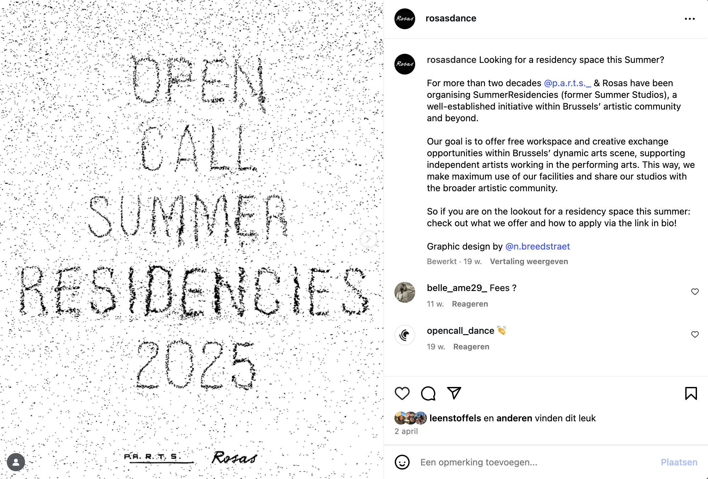
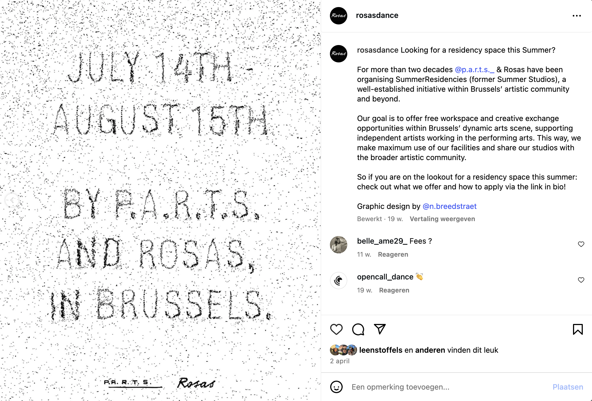
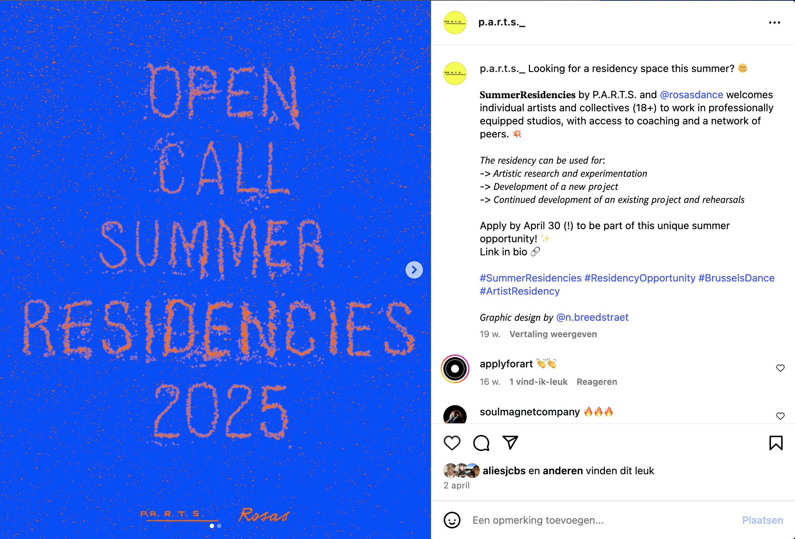
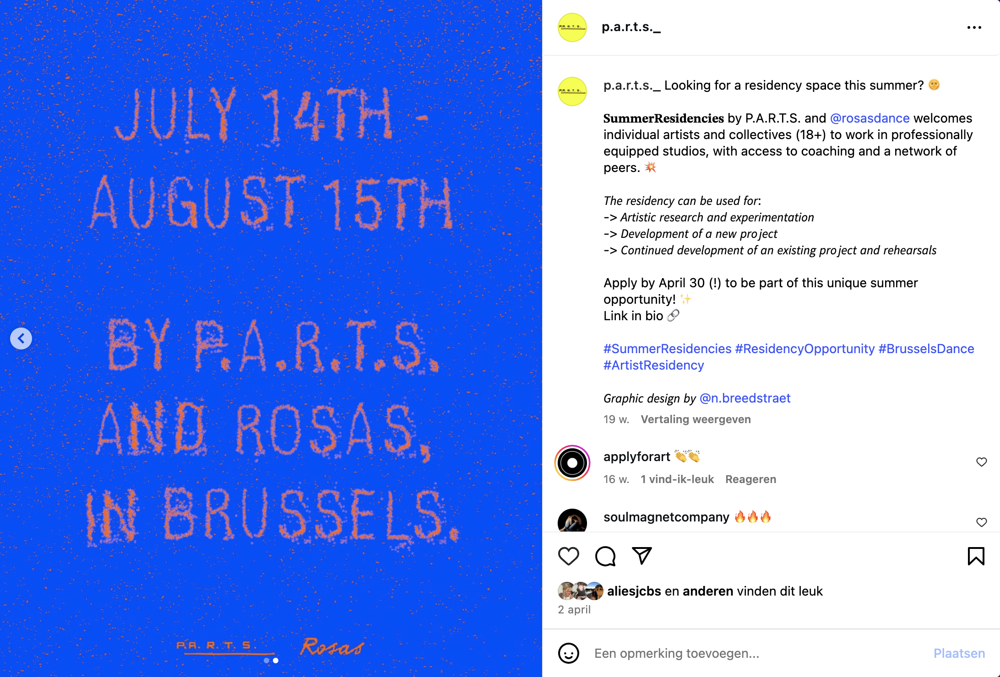
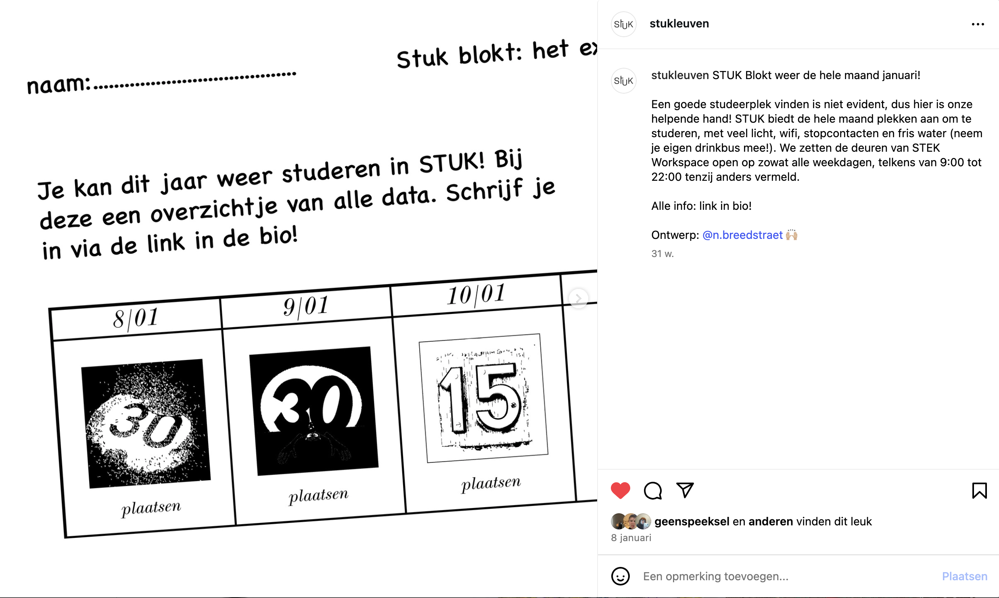
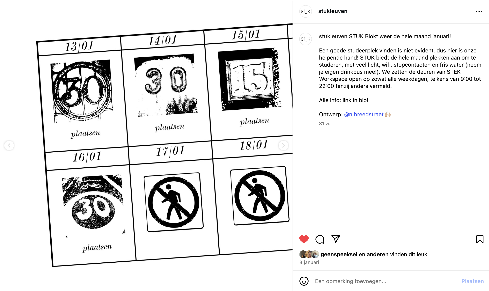
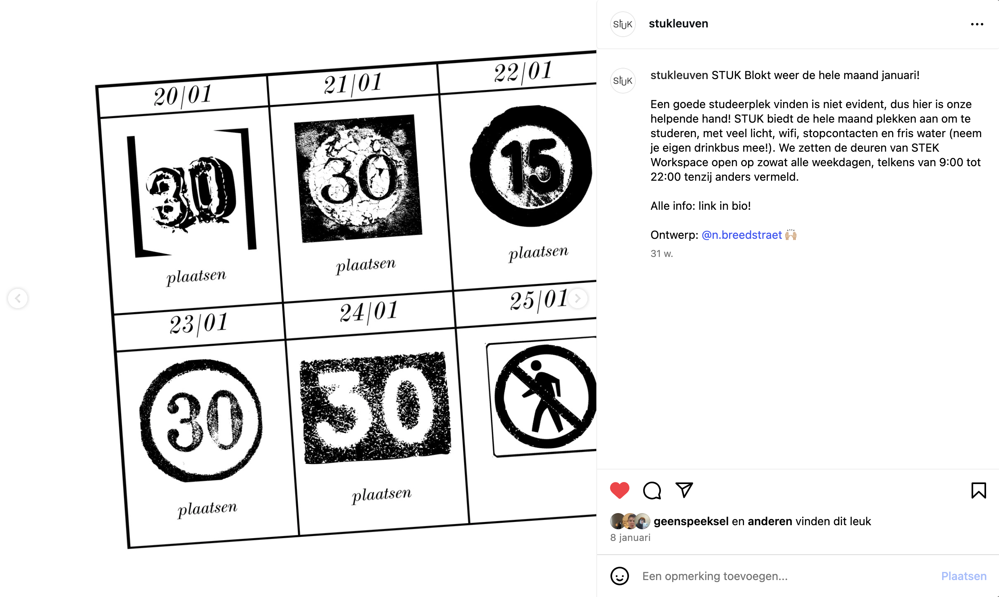
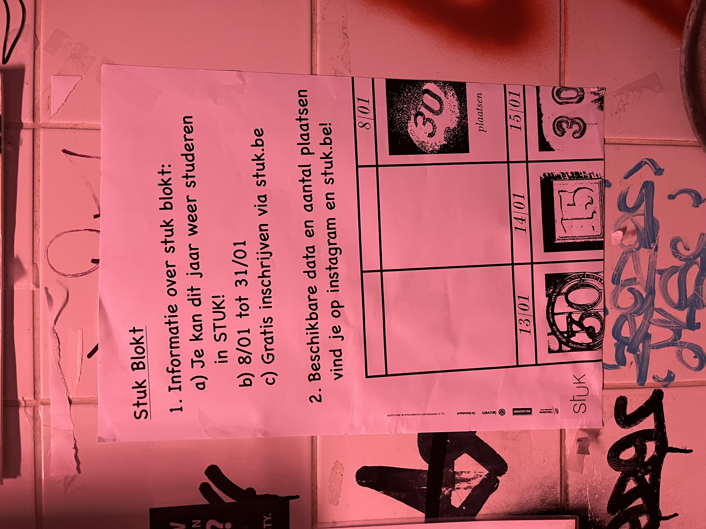

I was asked to create a campaign for the Summer Residencies 2025,
organized by Rosas and P.A.R.T.S. It was a great honor to have this
as my first real paid assignment. They requested something simple,
not too special, and in line with both of their styles. I was
immediately inspired by their logo, which looks as if it was written
in chalk. So I started experimenting with chalk and Illustrator!
I developed two styles: one in color, reflecting the style of
P.A.R.T.S., and one in black and white for Rosas, which matches
their aesthetic.





In 2023, I joined Canapé Brussels, a space centered around
community, art, and creating opportunities for each other. I created
a graphic identity inspired by the friend books we used to fill out
as kids. The style is designed to be easy to reproduce, allowing
every team member to work with it using the elements I put together.
This year I had the opportunity to design and make a website for
Canapé.
Click here to take a look!




As a volunteer at STUK, I got the chance to design a visual identity for STUK Blokt! Inspired by endlessly copied exams where the text and images slowly disappear, I created a poster and Instagram posts to capture that look.
In 2023, I began studying Multimedia and Creative Technology at Erasmushogeschool Brussel. As part of a course called Interactive Motion, we learned to use TouchDesigner. The course culminated in two assignments, one of which involved creating a project inspired by another artist’s work. I chose Daydream by Valentine Maurice, an artist known for exploring the effects of light on mental health. In this particular project, she experiments with the interplay between light and water. For my project, I focused on recreating this interaction, experimenting with recreating light and water in TouchDesigner.
In 2023, I started a new study, diving deeper into various programs
and techniques. This clip is an example of one of my first
experiments with After Effects. It's a lyric video where I applied
the new skills I acquired throughout the year.
The song featured is "My Little Tony" by Bar Italia. Inspired by
their album cover, which showcases stretched text, a color palette
of gray, black, and yellow, and a grainy texture, I incorporated
these elements into the video to create a cohesive and visually
engaging piece.
In 2023, I began studying Multimedia and Creative Technology at
Erasmushogeschool Brussel. In the Interactive Motion course, we
explored TouchDesigner and were tasked with two significant
assignments. For the second assignment, we created an interactive
digital installation that delved into human interaction with
technology.
I wanted to challenge the notion that technology is a
black-and-white world. Instead, I aimed to demonstrate its
complexity by allowing viewers to influence what they see through
hand and head movements. This clip showcases the interactive visual
I developed to explore this concept.